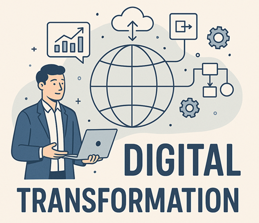

The Strategic Imperative of Digital Transformation
September 1, 2025
8 min read

In today’s fast-paced digital age, businesses and industries are undergoing rapid changes. Digital transformation is no longer a luxury; it is a necessity for organizations that want to remain competitive, enhance efficiency, and meet evolving customer expectations. This shift is especially relevant in regions like the Middle East, where governments and enterprises are investing heavily in technology-driven solutions. Let’s explore why digital transformation is crucial in 2025 and beyond.
1. Enhancing Efficiency and Productivity
One of the primary reasons digital transformation matters is its ability to streamline operations and improve productivity. By integrating technologies such as Artificial Intelligence (AI), the Internet of Things (IoT), and cloud computing, businesses can:
✅ Automate routine tasks: Reducing manual workload and human error.
✅ Improve data-driven decision-making: AI-powered analytics provide real-time insights for better strategic planning.
✅ Optimize resource allocation: Predictive analytics help organizations manage assets and workforce more efficiently.
For industries like logistics and manufacturing, where speed and accuracy are critical, digital transformation can significantly boost operational efficiency.
2. Meeting Evolving Customer Expectations
Today’s customers demand seamless, personalized experiences. Digital transformation enables businesses to:
✅ Leverage data analytics: Understanding customer preferences through data-driven insights.
✅ Implement omnichannel strategies: Providing a consistent experience across online and offline touchpoints.
✅ Enhance customer support with AI: Chatbots and virtual assistants ensure quick and efficient problem resolution.
In the Middle East, where e-commerce and digital services are booming, businesses must adapt to changing consumer behaviors to stay relevant.
3. Strengthening Business Resilience and Adaptability
The COVID-19 pandemic demonstrated the importance of agility in business operations. Companies that had embraced digital transformation were better equipped to handle disruptions. Key benefits include:
✅ Cloud-based solutions: Ensuring business continuity even during crises.
✅ Remote work capabilities: Enabling employees to work efficiently from anywhere.
✅ Cybersecurity advancements: Protecting sensitive data from evolving threats.
As businesses face economic fluctuations and geopolitical uncertainties, digital transformation ensures long-term resilience.
4. Driving Innovation and Competitive Advantage
Innovation is at the heart of digital transformation. Companies that invest in new technologies gain a competitive edge by:
✅ Developing new business models: Leveraging AI, blockchain, and IoT for innovative products and services.
✅ Enhancing speed-to-market: Accelerating product development and deployment.
✅ Adopting smart automation: Reducing operational costs and increasing efficiency.
In the Middle East, initiatives like Saudi Arabia’s Vision 2030 and Dubai’s Smart City strategy are driving technological advancements, encouraging businesses to adopt digital-first approaches.
5. Supporting Sustainability Goals
Digital transformation plays a crucial role in achieving sustainability objectives. Businesses can:
✅ Reduce carbon footprints: Implementing energy-efficient data centers and cloud solutions.
✅ Optimize supply chains: Reducing delays in payments and order processing.
✅ Implement paperless operations: Digital documentation reduces reliance on physical paperwork.
With sustainability becoming a key focus for governments and corporations, digital solutions contribute to a greener, more responsible future.
Conclusion
Digital transformation is no longer an option—it is a necessity for businesses looking to thrive in the modern era. From enhancing efficiency and customer experiences to fostering innovation and sustainability, its impact is far-reaching. In the Middle East, where rapid technological advancements are reshaping industries, organizations that embrace digital transformation will be best positioned for success in 2025 and beyond. The time to transform is now. Is your business ready for the future?